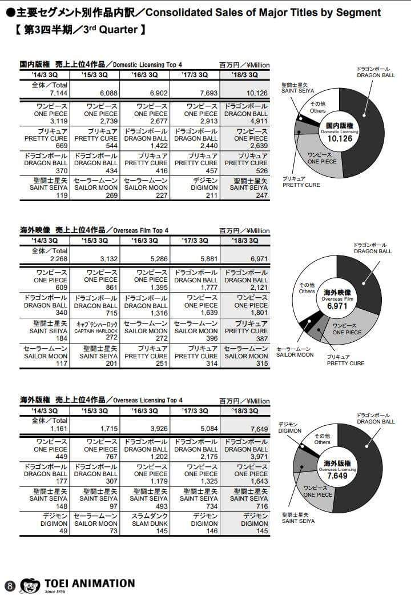
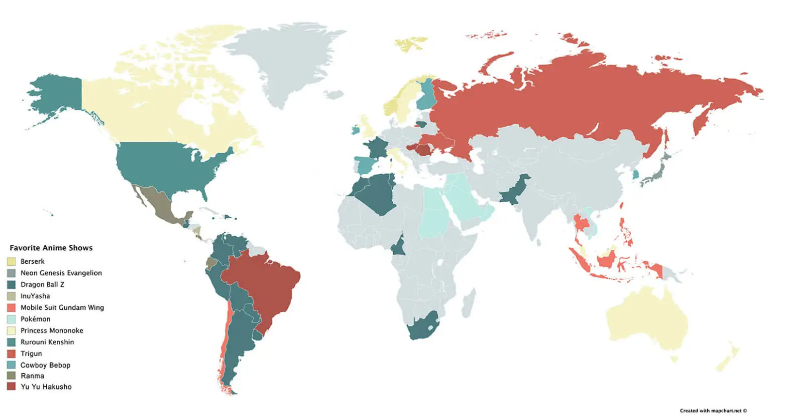

For 265 years Japan closed itself of from the rest of the world during its isolationist foreign policy period. Yet Japanese pop culture – anime, manga, J-pop, fashion, and technology – has made a massive impact across the world; with manga and anime playing a pivotal role in how Japan’s creative industries are perceived globally. Fallowing World War II, an era rapid modernization sparked a flurry of creativity throughout Japan. Allowing for anime and manga to become a symbol of Japanese pop culture through the distinctive storytelling through its unique art style. Over time this global phenomenon transcends cultural barriers, attracting a growing international fanbase. Additionally, trends like Kawaii and Harajuku styles, and J-pop have gained worldwide popularity, with Dragon Ball Z Playing a key role in Japan’s cultural ascent.

In 1989 the first episode of Dragon Ball Z was released under Toei Animation Studio. A total of 291 episodes were released from 1989 to 1996. A dubbed version of the series was released in over 81 countries across the world. Later in 1996-1997 a sequel titled “Dragon Ball GT” and a midquel tiled “Dragon Ball Super” between 2015-2018 was where released. The anime’s popularity allowed for Dragon Ball Z to become one of the most influential and iconic anime series in history, both nationally and internationally. The series is the highest earning franchise in the history Toei Animation Studio within almost 40 years of its establishment (Game Rant). Dragon Ball Z revolutionized the Shonen (young male anime) genre with serialized storytelling, intense battles, and deep character development, setting a new standard for anime. The series diverged from its predecessor, Dragon Ball, by shifting its focus to intergalactic conflicts, evolving the characters’ power levels, and exploring new transformations such as the iconic Super Saiyan (pictured to the left). This innovative storytelling approach has influenced numerous anime and manga series that followed, including Naruto and One Piece (Clark, 2023).
Dragon Ball Z integrates several themes such as perseverance, self-improvement as well as the importance and value of relationships directly going hand in hand with the cultural ideals that runs Japanese society today. Japanese folklore, particularly from Shinto and Buddhist traditions, plays a central role in DBZ’s storytelling. Characters like Kami and King Kai draw from Shinto’s spiritual reverence for nature, while the series’ emphasis on self-improvement and inner strength and tranquility reflects Buddhist ideals (Minguez-Lopez, 2014). These themes have made DBZ a symbol of cultural identity in Japan, contributing to the anime’s widespread popularity. DBZ's ability to balance high-stakes action with emotionally resonant character arcs has made it a beloved series for fans across the world.
In addition to its narrative innovations, DBZ has had a significant economic impact. The franchise’s merchandise, including toys, video games, and even collaborations with international brands like Adidas, has generated billions of dollars. In fact, DBZ is considered one of the highest-grossing media franchises of all time (Wikipedia, 2025). In Japan, the cultural importance of DBZ is showcased by the fact that the Japanese Anniversary Association in 2015 declared a “Goku day”, a day dedicated to the celebration of the character’s cultural significance (Wikipedia, 2025).

DBZ is not just popular in Japan but also other countries. For example, in Latin American countries like Mexico and Brazil, the series has become an iconic part of popular culture, with screenings of the Dragon Ball Super (the latest DBZ anime series) finale attracting tens of thousands of fans in 2018 (Clark, 2023). In the U.S., DBZ introduced anime to mainstream audiences in the 1990s and continues to influence popular culture today, as evidenced by references in music and film. The viral meme “It’s over 9000!” from the English dub of DBZ continues to live on in internet culture (Clark, 2023).